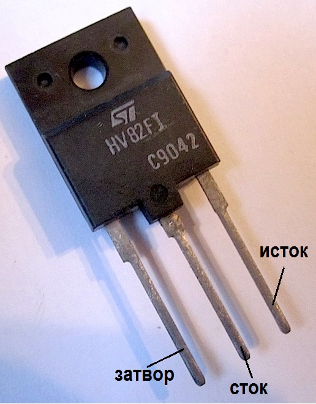

Транзистор HV82FI
Транзистор HV82FI (STHV82FI) - полевой МОП (MOSFET) силовой транзистор с каналом n-типа. Корпус TO-218, ISOWATT218.

Рис. 1 - Внешний вид, цоколевка и условное графическое обозначение транзистора HV82FI
Таблица 1
| Параметр | Значение |
|---|---|
| Максимальное напряжение сток-исток | 800 В |
| Максимальный ток сток-исток при 25°С | 4 А |
| Максимальное напряжение затвор-исток | 20 В |
| Пороговое напряжение включения | 4 В |
| Сопротивление сток-исток открытого транзистора | 2 Ом |
| Выходная емкость | 165 пФ |
| Рассеиваемая мощность | 150 Вт |
 Справочный лист транзистора HV82FI
Справочный лист транзистора HV82FI